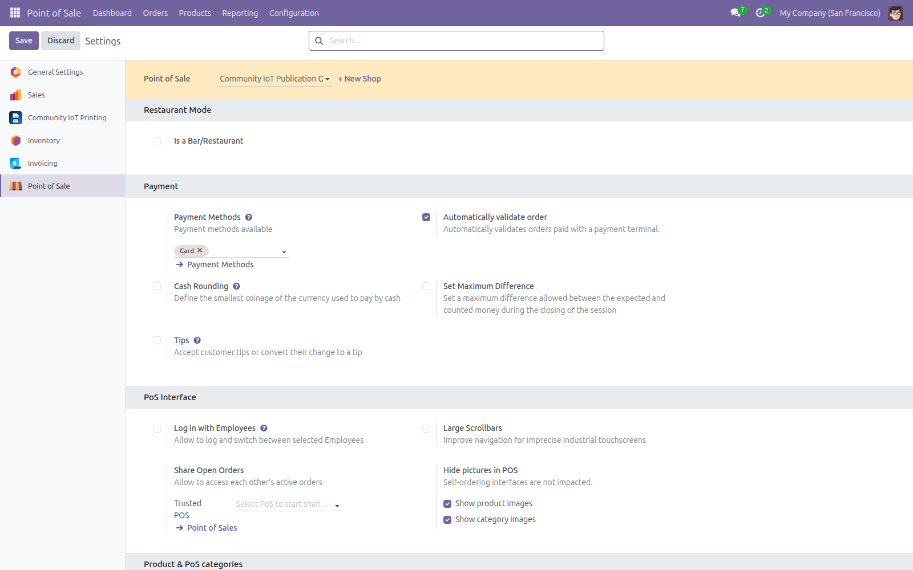
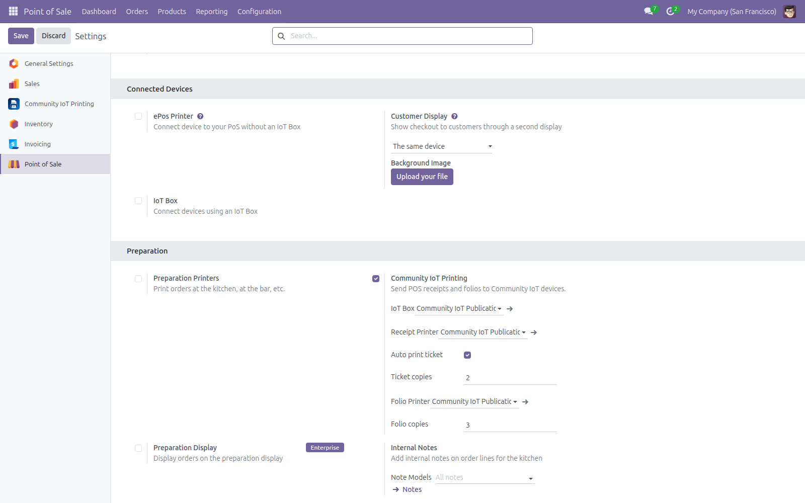
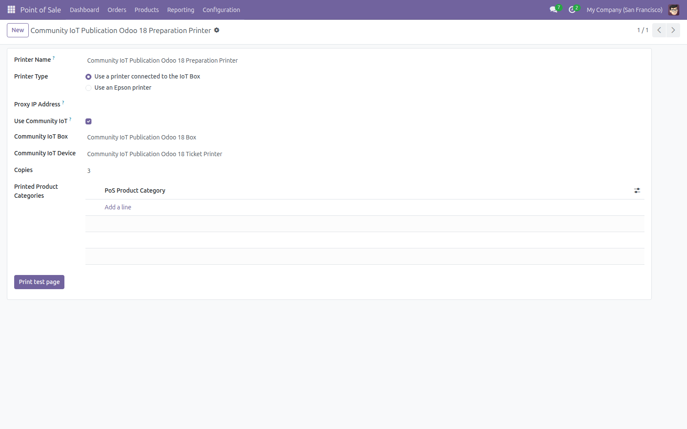
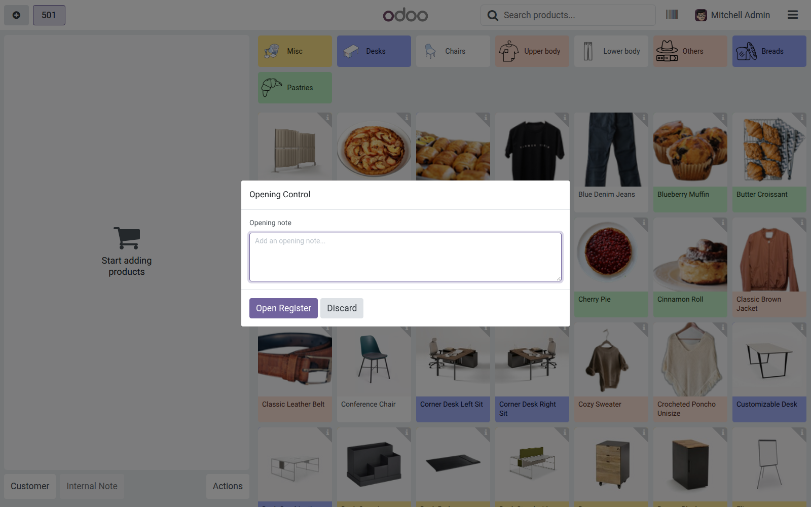

Dependency: IoT Box Community 18.0.2.0.0
Install and update IoT Box Community before this POS bridge. Community IoT Agent v0.4.0 is installed separately on the local device host.
Dependencia: IoT Box Community 18.0.2.0.0
Instale y actualice IoT Box Community antes de este puente POS. Community IoT Agent v0.4.0 se instala por separado en el equipo local.
POS Community IoT for Odoo 18
Route receipts, folios and preparation tickets through Community IoT Box with configurable copies and a standard POS fallback.
Receipts and folios
Configure the IoT Box, receipt device, automatic tickets, receipt copies and folio copies.
Preparation printing
Assign an IoT printer to preparation categories and queue changes from the POS operation.
Safe fallback
Unavailable IoT paths return control to the configured standard POS printer.
POS and agent specifications
The module keeps Odoo POS in control and sends bounded receipt or preparation jobs to the configured Community IoT device.
- Receipt, manual reprint and folio devices can be configured independently.
- Receipt and folio copies are explicit settings; preparation printers can use category-specific copies.
- New, changed and cancelled preparation lines are queued with the current POS order reference.
- RPC failures, offline boxes and unsupported devices fall back to the standard POS printer.
- The agent host keeps its URL, token and service configuration; this addon does not install or execute agent code.
POS operation → Community IoT queue → Agent v0.4.0 → Receipt or preparation printer
Fresh Odoo 18 interface evidence
These images were captured from the current Odoo 18.0 branch in a temporary local database.




Compatibility
Odoo 18 Community · Private Odoo.sh projects · On-premise deployments · Requires Point of Sale, IoT Box Community and Community IoT Agent v0.4.0.
Descripción en español
Envíe recibos, reimpresiones, folios y tickets de preparación del Punto de Venta mediante Community IoT Box en Odoo 18.
Configure caja, impresoras, copias y categorías de preparación. Los fallos de RPC, cajas fuera de línea o dispositivos no disponibles regresan a la impresora POS estándar.
Community IoT Agent v0.4.0 conserva su URL, token y servicio en el equipo local. Las capturas corresponden únicamente a la rama Odoo 18.0.